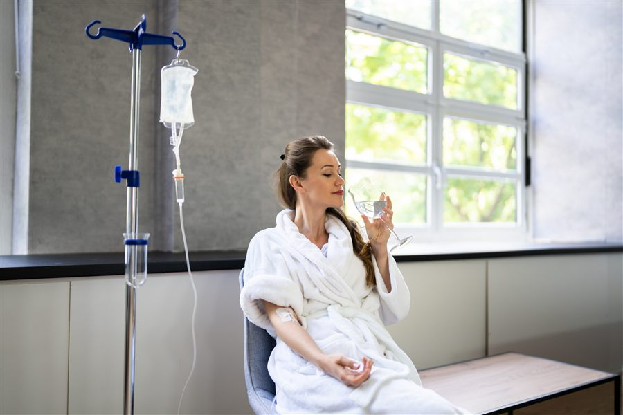

Services
Some days your body feels depleted, travel fatigue lingers, or illness drains your energy. Hydration alone does not always restore balance as quickly as you would like. In certain situations, intravenous therapy can help support recovery by delivering fluids and nutrients directly into your bloodstream. Our IV drip service in Tongaat and Umhlanga provides medically supervised intravenous therapy within a clinical setting.
IV drips allow fluids, vitamins and certain nutrients to enter the bloodstream without passing through the digestive system. This method enables rapid absorption, which can be useful when the body needs support during illness, dehydration or periods of fatigue.
IV therapy may be considered when you experience:
Before treatment, your health is reviewed to determine whether IV therapy is appropriate for your current condition.
The procedure is straightforward. A small intravenous line is placed into a vein in your arm. The selected fluid solution is then delivered slowly through the drip while you remain comfortably seated.
Appointments usually take under an hour. During this time, you can relax while the infusion is administered under medical supervision. Your medical history is reviewed beforehand. If you are living with conditions such as diabetes or hypertension, these factors are considered carefully before any treatment is given.
IV drips are often requested by individuals with demanding schedules. Travel fatigue is a common example. Long flights, disrupted sleep, and dehydration can leave you feeling depleted.
In some cases, IV therapy is also used alongside broader wellness plans. If you are working towards improved energy levels through weight management or structured nutrition, hydration support may form part of the discussion.
People preparing for executive medical assessments or aviation medical examinations sometimes choose to review hydration and nutritional status beforehand. Stable health markers are important for professional responsibilities that demand alertness and physical resilience.
Many people resume normal activities immediately after their appointment. Hydration levels gradually stabilise as fluids circulate through the body.
You will receive guidance on maintaining hydration, balanced nutrition and adequate rest. If underlying health concerns are identified during your visit, these can be explored further through general medical care or ongoing chronic condition management.
Not always. Certain medical conditions require careful evaluation before intravenous therapy is recommended. That is why every IV drip appointment begins with a medical assessment.
Your safety comes first. The aim is to support recovery where appropriate, not to replace broader health management.
If fatigue, dehydration or travel demands are affecting your wellbeing, consider scheduling an IV drip consultation. A structured medical review can help determine whether this treatment fits into your overall health plan.
Schedule a Consultation